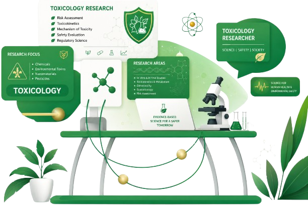

✒ Dr. MDH Prodhan
PhD (Aristotle University of Thessaloniki, Greece)
Principal Scientific Officer at the Pesticide Research & Environmental Toxicology Section,
Entomology Division,
Bangladesh Agricultural Research Institute (BARI),
Gazipur. My research focuses on pesticide residue analysis, food safety,
and environmental toxicology — developing and validating analytical methods using
LC-MS/MS and GC-MS/MS to ensure safe food for all.
"Science for safe food and a healthy environment."

Researcher & Scientist
I'm Dr. Mohammad Dalower Hossain Prodhan — a dedicated researcher and Principal Scientific Officer at the Bangladesh Agricultural Research Institute (BARI). I earned my PhD in Pesticide Science from the Aristotle University of Thessaloniki, Greece, where I specialized in advanced analytical chemistry for pesticide residue determination.
My research spans pesticide residue analysis, food safety assessment, and environmental toxicology. I have developed and validated numerous analytical methods based on QuEChERS extraction coupled with LC-MS/MS and GC-MS/MS for monitoring pesticide residues in vegetables, fruits, fish, water, and other environmental matrices. My work on variability of pesticide residues has contributed critical data for global dietary risk assessment frameworks.
Developing and validating advanced analytical methods for pesticide residue determination in food and environmental samples. Investigating variability factors (VFs) for acute dietary risk assessment. Monitoring organophosphorus, organochlorine, and synthetic pyrethroid pesticide residues.
My Research Process
Identify knowledge gaps in pesticide residue analysis, food safety, and environmental contamination. Formulate testable hypotheses and design targeted research studies.
Collect representative samples from agricultural fields, markets, and water bodies across Bangladesh following standardized protocols to ensure data integrity.
Optimize and validate Quick, Easy, Cheap, Effective, Rugged, and Safe (QuEChERS) extraction techniques for various food and environmental matrices.
Perform high-sensitivity instrumental analysis using Liquid and Gas Chromatography coupled with Tandem Mass Spectrometry for accurate quantification.
Validate methods per SANTE/EURACHEM guidelines — assessing accuracy, precision, linearity, LOD, LOQ, and matrix effects to ensure reliability.
Evaluate acute and chronic dietary exposure risks using FAO/WHO frameworks, estimating variability factors (VFs) and comparing with ADI/ARfD values.
Disseminate findings through peer-reviewed international journals, contributing to the global scientific knowledge base on pesticide residue and food safety.
My Written Work
A comprehensive review examining how pesticide residue levels vary between individual crop units and the implications for acute dietary risk assessment methodologies used by global food safety authorities.
Read PublicationDevelopment and optimization of an analytical method for detecting pesticide residues in betel leaf — a crop widely consumed across South Asia — ensuring food safety compliance.
Read PublicationFirst-ever variability factor (VF) data for mango and guava from Bangladesh markets, revealing VFs significantly higher than the default value of 3 used in global dietary risk assessments.
Read PublicationAnalysis of pesticide residue distribution in individual cauliflower units from both controlled field trials and retail markets in Greece, providing critical data for acute exposure assessment.
Read PublicationValidation of a sensitive QuEChERS-based method coupled with liquid chromatography triple quadrupole mass spectrometry for multi-residue analysis in melon samples.
Read PublicationA robust liquid chromatography-mass spectrometry method for simultaneous quantification of multiple pesticide residues in eggplant, achieving excellent recovery rates and sensitivity.
Read PublicationApplication of modified QuEChERS extraction and GC-ECD for detecting persistent organochlorine pesticide residues in shrimp — a critical export commodity for Bangladesh.
Read PublicationMethod validation and residue monitoring of 132 fresh cabbage samples from Greek markets, with variability factors ranging from 1.00 to 6.75 for seven insecticides and fungicides.
Read PublicationA comparative study of pesticide residue distribution in eggplant units from field trials and marketplace purchases in Greece, contributing essential variability data for global food safety frameworks.
Read PublicationResearch & Collaboration
Let's Work Together
Interested in collaboration, research consultation, or analytical services? I'd be glad to hear from you. Fill out the form or reach out directly.